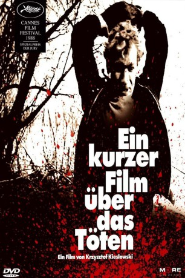

#5903 Ein Kurzer Film über das Töten
 
 IMDB-Wertung: 8.2 / 10
IMDB-Wertung: 8.2 / 10  Metascore: 0
Metascore: 0 
Krzysztof Kieslowskis kurzer Film über das Töten aus dem Jahr 1988 bringt drei Männer zusammen - einen 20jährigen Jungen, einen Taxifahrer und einen Juristen. Der 20jährige ermordet den Taxifahrer und wird vor Gericht vom Juristen verteidigt. Ausgezeichnet mit dem Europäischen Filmpreis als bester Film.
Jahr: 1988
Dauer: 81 Minuten
FSK: 16
Land: Polen Studio: Concorde Home EntertainmentTonspuren:
Untertitel:
Auflösung: SD (640x384) Größe: 697 MB
Genre: Drama, Krimi
Regisseur:  Krzysztof Kieslowski
Krzysztof Kieslowski
Drehbuch: Jeremy Garelick
Soundtrack:
Darsteller:
- Miroslaw Baka als Jacek Lazar
 Krzysztof Globisz als adwokat Piotr Balicki
Krzysztof Globisz als adwokat Piotr Balicki- Jan Tesarz als taksówkarz Waldemar Rekowski
- Zbigniew Zapasiewicz als Przewodniczacy Komisji
- Aleksander Bednarz als Kat
- Artur Barcis als Mlody medczyzna
 Krystyna Janda als Dorota
Krystyna Janda als Dorota Olgierd Lukaszewicz als Andrzej
Olgierd Lukaszewicz als Andrzej- Leonard Andrzejewski als Kumpel pijanego na postoju taksówek
- Helena Kowalczykowa als staruszka karmiaca goleble pod Kolumna Zygmunta
- Krzysztof Luft als
- Andrzej Mastalerz als brat Jacka
- Malgorzata Pieczynska als
- Zdzislaw Rychter als rysownik na Rynku Starego Miasta
- Krzysztof Stelmaszyk als
- Barbara Dziekan als Bileterka
- Jerzy Zass als Naczelnik
- Zdzislaw Tobiasz als Sedzia
- Wieslaw Bednarz als
- Zbigniew Borek als
- Ryszard W. Borsucki als
- Wladyslaw Byrdy als
- Peter Falchi als British motorist
- Andrzej Gawronski als
- Iwona Glebicka als
- Henryk Guzek als
- Elzbieta Helman als Beatka
- Boguslaw Hubicki als
- Henryk Lapinski als Czlonek komisji adwokackiej
- Maciej Maciejewski als Procurator
- Marzena Manteska als
- Borys Marynowski als Straaznik
- Marlena Miarczynska als
- Jolanta Mielech als
- Bogdan Niewinowski als Pracownik punktu totolotka
- Lech Pietrasz als
- Zbigniew Plato als
- Cezary Switkowski als
- Maciej Szary als Sasiad taksówkarza
Datei: X:\1988\Kurzer Film über das Töten, Ein (1988, FSK16, 640x384).avi seit 03.04.2017
Festplatte: HD 1987-1991
 Es gibt insgesamt 66 Filme in der Gruppe '1988'
Es gibt insgesamt 66 Filme in der Gruppe '1988'